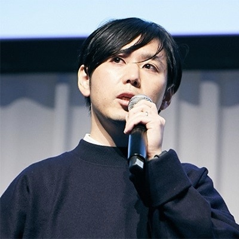

MESONと博報堂が目指すリアルとバーチャルが融合したコミュニケーション空間の実現
講演情報
| 講演資料 | 公開 |
|---|---|
| スクリーンショット撮影可否 | 可 |
| SNS投稿可否 | 可 |
講演概要
MESON及び博報堂DYホールディングスは、ARクラウドや空間コンピューティング技術を軸にした体験拡張時代のユーザー行動や基盤技術、コミュニケーションについての共同研究を進めています。今回の講演では両社が実現に向けて取り組んでいるリアルとバーチャルが融合した空間における新しいコミュニケーションプラットフォームについて、両社が実施した実証実験のプロセスや検証結果も交えながらお話させていただきます。このプロジェクトは今年6月に両社が発表したAR時代の自撮りコミュニケーション「mirr」にて実験的に行ったリアル空間とバーチャル空間をシームレスに繋げる体験を更に進化させたプロジェクトです。常に変化し続けるリアル空間と、そのリアル空間をリアルタイムに再現するバーチャル空間とを融合させることで誕生する新たなコミュニケーション空間の可能性に触れていただければ幸いです。
講演者詳細
-

University College London MA in Film Studiesを修了後、2007年に博報堂入社。FMCG領域におけるデジタルマーケティング業務、グローバルPR業務に従事。2018年より現職で、ARクラウドや空間コンピューティング技術などを始めとした生活者との新たなタッチポイントやコミュニケーションを生みうる先端技術の研究を行っている。
-
大学にてネットワーク工学、大学院にてソフトウェア工学を専攻。学業の傍ら、在学中はいくつかのスタートアップでエンジニアとして開発プロジェクトに携わる。大学院卒業後、代表の梶谷とMESONを創業。エンジニアのバックグラウンドを活かしながらプロデューサーとして博報堂DYホールディングス様との共同研究プロジェクトを始めとした複数のARプロジェクトに携わる。MESONが主催する日本発のグローバルコミュニティイベント「ARISE」のオーガナイザーも務め、日本におけるXRコミュニティの醸成にも取り組む。